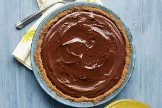

Chocolate Pie

Description
A rich and chocolaty pie!
Ingredients
- 1 (9 inch) pie crust, baked
- 1 1/2 cups white sugar
- 1/3 cup cornstarch
- 1/2 teaspoon salt
- 3 cups milk
- 3/4 cup semisweet chocolate chips
- 2 (1 ounce) squares unsweetened chocolate, chopped
- 4 egg yolks, beaten
- 1 tablespoon vanilla extract
Steps
- Combine sugar, cornstarch, and salt in a 2-quart saucepan. Stir in milk gradually. Add chocolate chips and
unsweetened chocolate. Place over medium heat, stirring constantly, until mixture thickens and boils. Boil and
stir 1 minute.
- Place egg yolks in a medium heatproof bowl. Gradually pour half of chocolate mixture into egg yolks, whisking
constantly.
- Whisk egg yolk mixture back into mixture in saucepan. Place over medium heat and bring back to a boil, stirring
constantly. Boil and stir 1 minute. Remove from heat; stir in vanilla extract.
- Pour mixture into baked pie shell. Press a layer of plastic wrap onto filling. Refrigerate at least 4 hours but
no longer than 48 hours. Remove plastic wrap before serving.